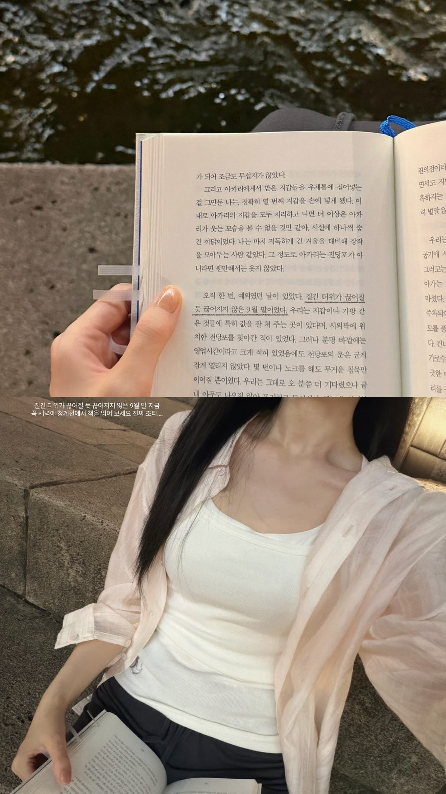
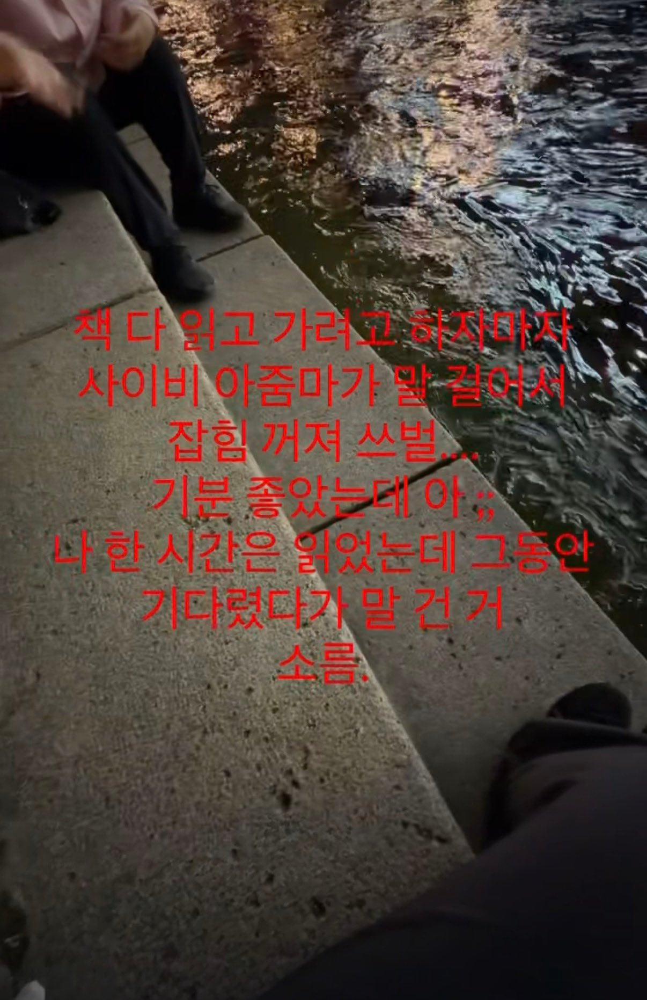
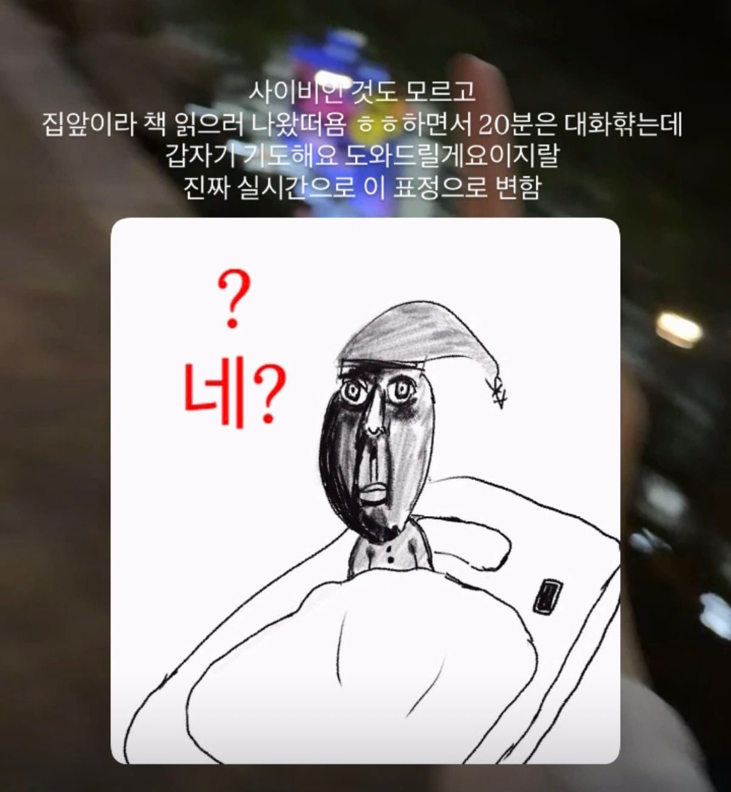

갑자기 빡쳐서 느낌 확 바뀜ㅋㅋㅋㅋㅋㅋㅋㅋㅋㅋㅋㅋㅋㅋㅋ



갑자기 빡쳐서 느낌 확 바뀜ㅋㅋㅋㅋㅋㅋㅋㅋㅋㅋㅋㅋㅋㅋㅋ
말그대로 사회의 암덩어리새끼들
청계천이 책읽을 컨디션인 곳인가
ㅇㅇ 너도가봐 개좋음
야외도서관이라고 빈백 깔아두고 그 일대 주변은 전부 독서하러 온 사람들임. 런닝 하는 사람들도 그 부근은 방해 안하려고 그냥 걷는다더만ㅋㅋㅋㅋ
쇄골이 이쁘네
길 물어봐서 대답해주니까 자기가 관상을 뭐 볼 줄 안다고 봐준다해서 조상이 뭐 어쩌구 저쩌구
하길래 아 사이비 잘못 걸렸네 생각했더니 진짜 그 말만 해주고 가시더라 뭐지 싶었음
난 종교의 자유는 존중하지만 포교의 자유는 인정하지 않는다
사람들을 못 믿게 만들고 척박한 세상으로 변모하는데 일조한 사이비놈들은 다 태워 죽여야 한다
길거리 포교하면 시발 벌금 50만원씩 내게해야함